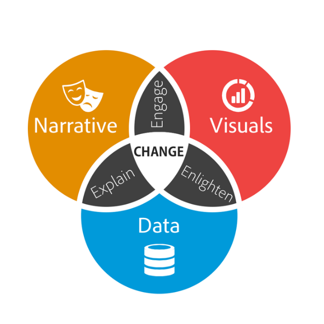

Unleashing the Power of Data: Enhancing Business Decision Making
Want to Know More?Today's culture is data-driven, which means that firms have access to a wealth of information. However, the true value lies in the analysis and interpretation of this data so that informed decisions may be made. Data analytics has evolved as an important tool, enabling firms to discover insights that can be put into action and gaining an advantage over their competitors.
1. Extracting Actionable Insights: Data analytics allows businesses to extract valuable insights from large datasets. By applying statistical models and machine learning algorithms, organizations can uncover patterns, trends, and correlations that drive strategic decision making.
2. Predictive Analytics: Predictive analytics leverages historical data to forecast future trends and outcomes. By utilizing predictive models, businesses can make proactive decisions, optimize operations, and anticipate customer needs.
3. Improving Efficiency and Performance: Data analytics enables organizations to identify inefficiencies, bottlenecks, and areas for improvement. By analyzing operational data, businesses can streamline processes, optimize resource allocation, and enhance overall performance.
According to Forbes Link, it has been shown that firms that employ data analytics are three times more likely to make decisions that benefit the company. Furthermore, the piece emphasized the growing need for data analysts, as well as the potential for data-driven decision making to stimulate innovation. Data Storytelling.
Data analytics has become a game-changer in business decision making, unlocking actionable insights, enabling predictive capabilities, and improving operational efficiency. Embracing data-driven strategies is vital for businesses looking to thrive in today's competitive landscape.